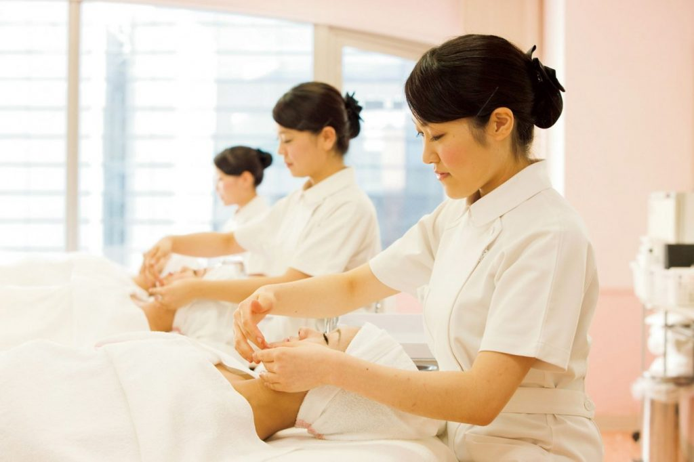
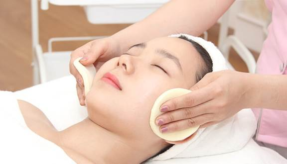

Kinh nghiệm học nghề Spa: Hướng dẫn chi tiết
Học nghề spa không chỉ là quá trình tiếp thu kiến thức mà còn là hành trình rèn luyện kỹ năng, trải nghiệm thực tế và xây dựng sự tự tin trong môi trường làm đẹp chuyên nghiệp. Bài viết này sẽ chia sẻ kinh nghiệm học nghề spa toàn diện, từ việc xác định mục tiêu, lựa chọn khóa học uy tín, chuẩn bị kỹ năng và thái độ, đến lộ trình học, thực hành chuyên sâu và phát triển sự nghiệp lâu dài.
1. Xác định mục tiêu học nghề Spa
Trước khi bắt đầu bất kỳ khóa học spa nào, việc đầu tiên và quan trọng nhất là xác định mục tiêu học nghề một cách rõ ràng và cụ thể. Mục tiêu này không chỉ giúp bạn định hướng con đường học tập mà còn quyết định cách lựa chọn khóa học, thời gian đầu tư và cách bạn áp dụng kiến thức vào thực tế. Một số người học spa với mục tiêu tìm việc làm ổn định trong các spa hoặc thẩm mỹ viện, trong khi những người khác lại mong muốn nâng cao tay nghề để phục vụ khách hàng chuyên nghiệp hoặc thậm chí mở spa riêng. Việc xác định mục tiêu giúp bạn có kế hoạch học tập rõ ràng, tập trung vào những kỹ năng cần thiết và tránh lãng phí thời gian vào những nội dung không phù hợp.

2. Lựa chọn trung tâm đào tạo uy tín
Lựa chọn một trung tâm đào tạo uy tín là yếu tố then chốt quyết định chất lượng học nghề spa của bạn. Trung tâm uy tín không chỉ cung cấp kiến thức lý thuyết đầy đủ mà còn chú trọng thực hành, tạo điều kiện cho học viên trải nghiệm kỹ năng trên mẫu thật, dưới sự hướng dẫn tận tình của giảng viên có kinh nghiệm thực tế. Khi chọn trung tâm, bạn nên quan tâm đến các yếu tố như: đội ngũ giảng viên chuyên môn cao, cơ sở vật chất hiện đại, chương trình đào tạo bài bản kết hợp lý thuyết và thực hành, cùng phản hồi và đánh giá từ học viên đã học trước đó. Tránh lựa chọn các khóa học quảng cáo rầm rộ nhưng thiếu thực hành hoặc kiến thức đã lỗi thời, bởi điều này sẽ ảnh hưởng trực tiếp đến khả năng áp dụng nghề sau này.
3. Chuẩn bị kỹ năng và thái độ học tập
Để đạt hiệu quả tối đa trong quá trình học nghề spa, học viên cần chuẩn bị đầy đủ cả kỹ năng chuyên môn lẫn thái độ học tập tích cực. Kỹ năng cơ bản bao gồm hiểu về cấu trúc da, các loại da phổ biến, vấn đề da thường gặp và các thao tác chăm sóc cơ bản như massage, chăm sóc da mặt, body, bấm huyệt. Bên cạnh đó, kỹ năng mềm như giao tiếp, tư vấn khách hàng, thuyết phục và lắng nghe nhu cầu khách hàng cũng đóng vai trò quan trọng trong việc xây dựng uy tín và chất lượng phục vụ. Thái độ tích cực, kiên nhẫn, tỉ mỉ và yêu nghề sẽ giúp học viên dễ dàng tiếp thu kiến thức, vượt qua áp lực thực hành và phát triển tay nghề nhanh chóng.
4. Lộ trình học nghề Spa hiệu quả
Một lộ trình học nghề spa khoa học thường được chia thành ba giai đoạn chính, giúp học viên vừa nắm vững kiến thức vừa rèn luyện tay nghề thực tế:
- Giai đoạn cơ bản: tìm hiểu lý thuyết về da, các sản phẩm chăm sóc, thực hành massage cơ bản và các liệu trình chăm sóc da mặt, body thông thường.
- Giai đoạn nâng cao: học các liệu trình chuyên sâu như trị mụn, nám, tẩy tế bào chết, phục hồi da và chăm sóc toàn thân, kết hợp xử lý các tình huống thực tế.
- Giai đoạn chuyên nghiệp: phát triển kỹ năng tư vấn khách hàng, quản lý spa, marketing, xây dựng thương hiệu cá nhân và áp dụng công nghệ hiện đại vào chăm sóc khách hàng.
Trong suốt lộ trình này, thực hành thường xuyên trên mẫu thật giúp học viên nâng cao sự tự tin, ghi nhớ kỹ thuật và chuẩn bị sẵn sàng cho công việc thực tế hoặc mở spa riêng.
5. Tránh rủi ro khi học nghề Spa
Khi học nghề spa, học viên cần lưu ý một số rủi ro có thể gặp phải, bao gồm việc lựa chọn trung tâm thiếu uy tín, giảng viên không chuyên, chương trình đào tạo không bài bản hoặc các khóa học rẻ tiền nhưng thiếu thực hành và kiến thức đã lỗi thời. Thiếu hướng dẫn trực tiếp và môi trường thực hành hạn chế sẽ khiến học viên khó áp dụng kỹ năng vào công việc thực tế. Vì vậy, đầu tư vào khóa học chất lượng là điều cần thiết để phát triển bền vững, nâng cao tay nghề nhanh chóng và tạo nền tảng vững chắc cho sự nghiệp.

6. Phát triển sự nghiệp sau khi học
Sau khi hoàn tất khóa học, học viên có thể lựa chọn đi làm tại các spa, thẩm mỹ viện, hoặc tự mở cơ sở chăm sóc sắc đẹp riêng. Sự thành công lâu dài trong nghề spa không chỉ dựa vào kỹ năng đã học mà còn phụ thuộc vào thái độ phục vụ khách hàng, khả năng quản lý và cập nhật các xu hướng, kỹ thuật mới. Việc tiếp tục học hỏi, tham gia các khóa nâng cao và áp dụng công nghệ hiện đại sẽ giúp học viên duy trì lợi thế cạnh tranh và xây dựng sự nghiệp bền vững.
Kết luận
Thành công trong nghề spa đến từ việc chọn lựa trung tâm đào tạo uy tín, chuẩn bị kỹ năng đầy đủ, rèn luyện thái độ tích cực và thực hành bài bản. Lộ trình học rõ ràng kết hợp kinh nghiệm thực tế sẽ giúp học viên phát triển tay nghề, tự tin phục vụ khách hàng và xây dựng sự nghiệp ổn định, lâu dài trong ngành spa, đồng thời thể hiện được chuyên môn và uy tín cá nhân trong mắt khách hàng.